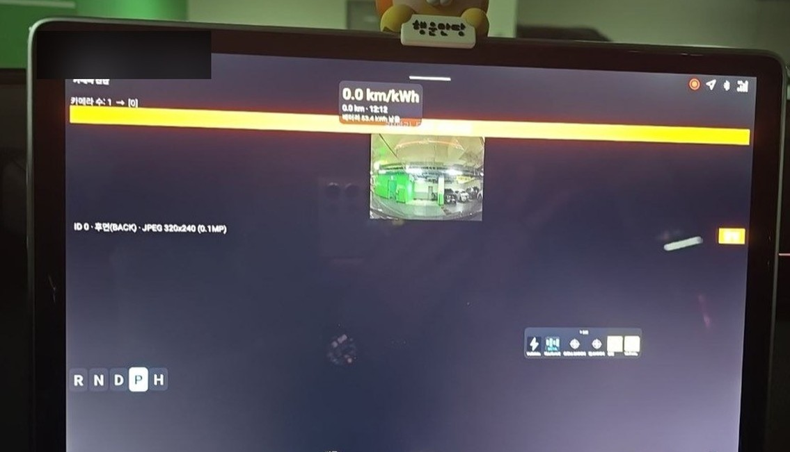
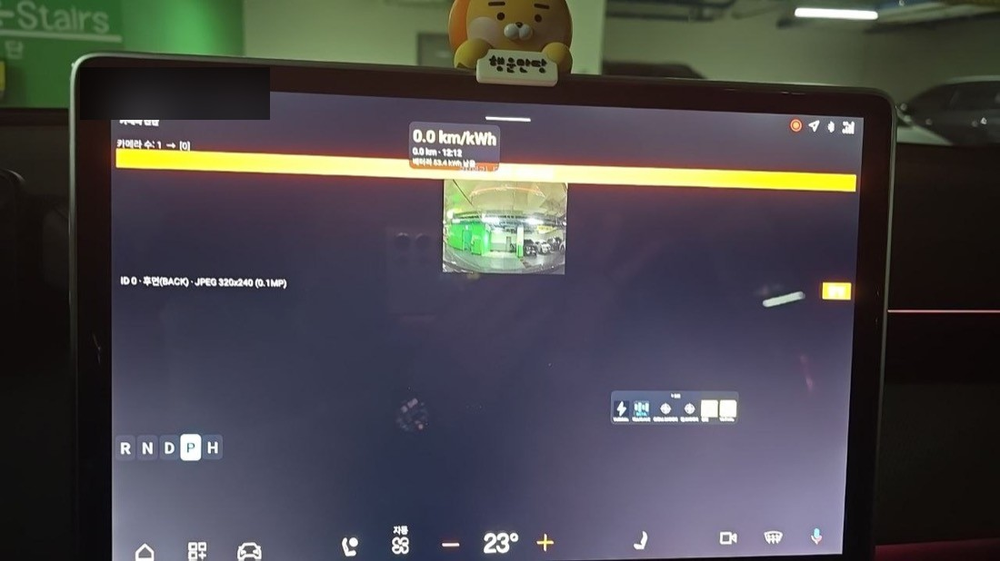

📷 Park Snapshot
Shift into P and it automatically takes a photo and sends it to Telegram. Plus your parking location (map).
What is this app?
After parking, you sometimes forget "where did I leave it?" This app takes a photo of what's in front of the car when you park (P), and automatically sends the photo + location (map) to your Telegram. You can receive it right after you get out.
Key features
- Detects entry into P gear → camera capture → Telegram send
- Location: Google Maps link + Telegram location pin
- Shows gear, GPS, and send status on the overlay (resizable · movable)
- Includes a manual test button
How to use
- In Telegram, /start a bot (created with @BotFather)
- Enter the bot token and chat ID in the app (built-in defaults included) → save
- "Turn on the overlay" → shift into P and it auto-captures and sends
What I learned (trial and error)
- Vehicle camera: The EVS (surround view) API is system-only, but it's accessible via the Camera2 API (successfully captured on the real car)
- Door signal blocked:
DOOR_POSrequires Signature|Privileged permission → not available to third parties → switched the trigger to entering P - Three Telegram failures in a row: ① conversation with the bot never started (chat not found) ② token typo in the car (401) ③ caption UTF-8 mangling (400)
Screenshots




💬 댓글